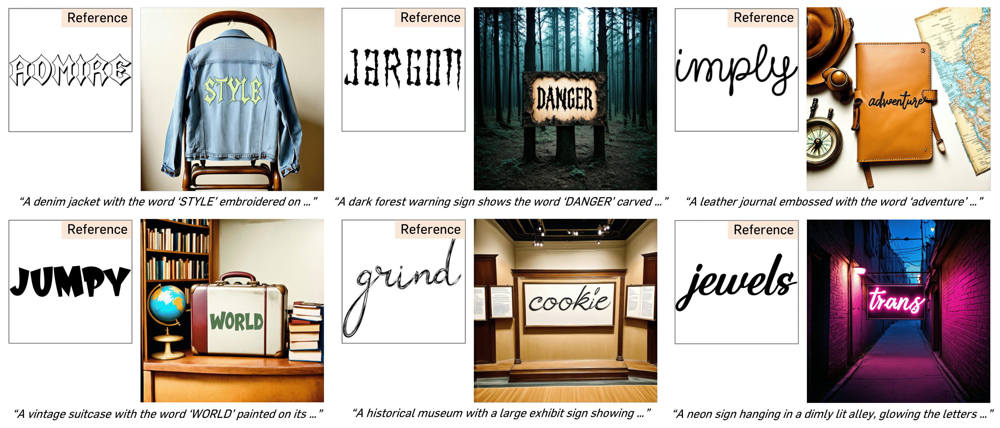
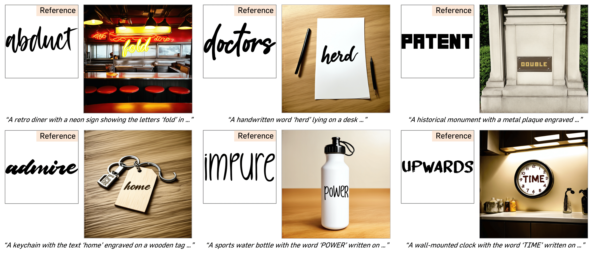
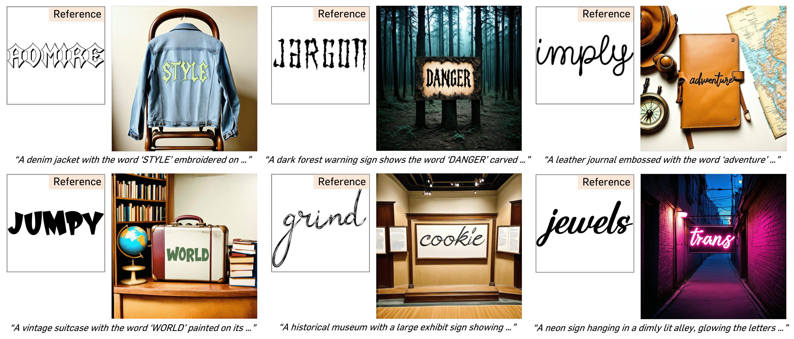
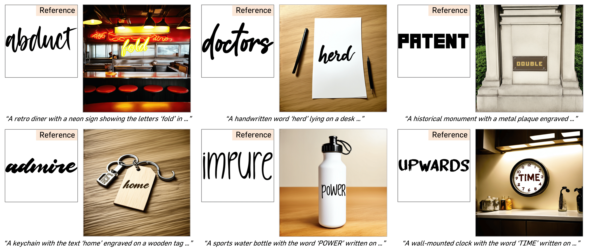
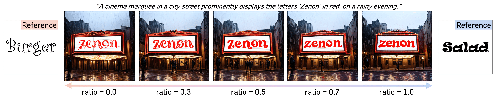
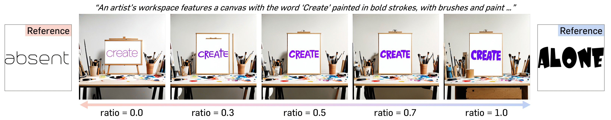
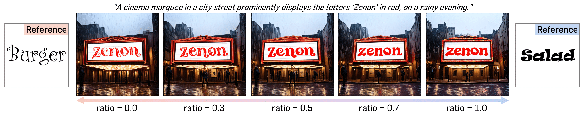
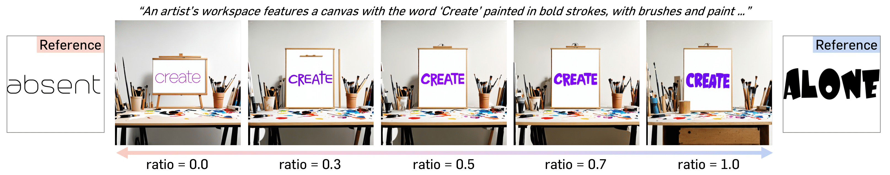

TL;DR: FontAdapter performs instant font customization in visual text generation, without additional fine-tuning on the target fonts.

We present FontAdapter, a framework that enables visual text generation in any unseen fonts within seconds, conditioned on a reference glyph image. To this end, we find that direct training on font datasets fails to capture nuanced font attributes, limiting generalization to new glyphs. To overcome this, we propose a two-stage curriculum learning approach: FontAdapter first learns to extract font attributes from isolated glyphs and then integrates these styles into diverse natural backgrounds. To support this two-stage training scheme, we construct synthetic datasets tailored to each stage, leveraging large-scale online fonts effectively. Experiments demonstrate that FontAdapter enables high-quality, robust font customization across unseen fonts without additional fine-tuning during inference. Furthermore, it supports visual text editing, font style blending, and cross-lingual font transfer, positioning FontAdapter as a versatile framework for font customization tasks.
Our goal is to generate a visual text image with a customized font style, given a text prompt and a font reference image.

We develop a two-stage training scheme that enables the model to effectively learn font attributes, with stage-specific datasets carefully designed to support the objective of each stage.

In the first stage, FontAdapter is trained to generate a different
text-only image with varied text content. This setting allows the model
to focus exclusively on extracting fine-grained font attributes from glyph embeddings
without interference from background or color, enabling precise style disentanglement.
In the second stage, FontAdapter is trained to generate a scene-text image
that incorporates realistic backgrounds, glyph coloring, and complex visual contexts.
This stage enables the model to adapt previously learned font attributes to diverse scenes
while preserving text fidelity and visual coherence.
 





 


